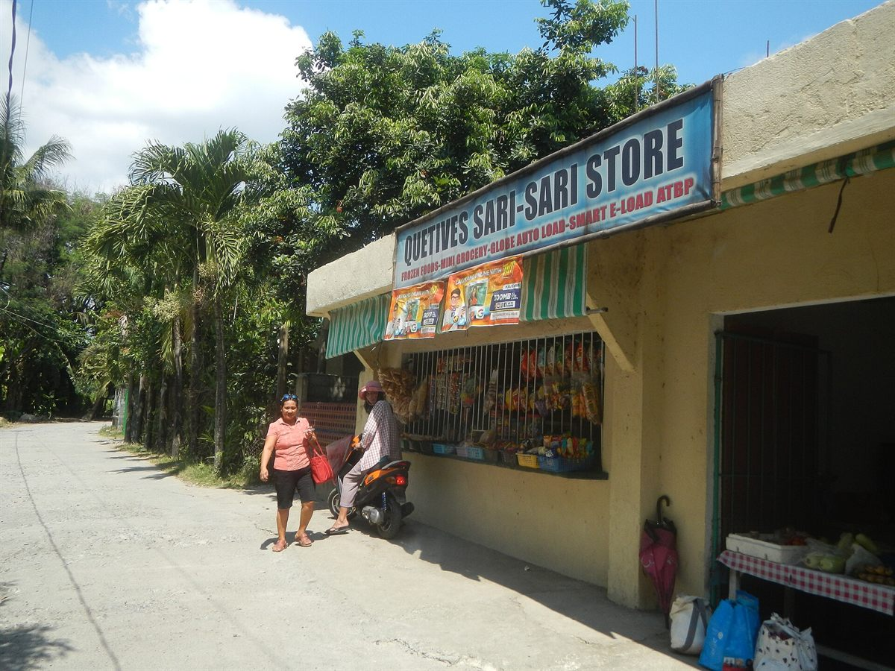
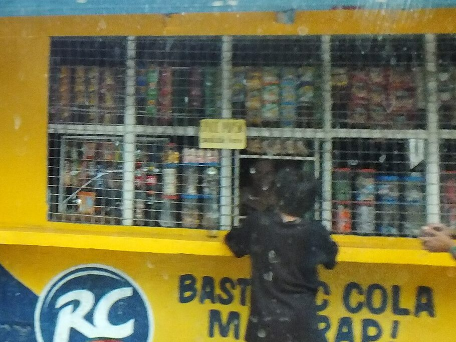
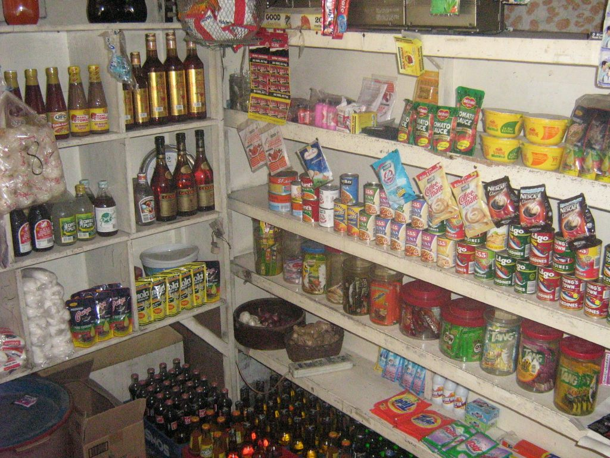
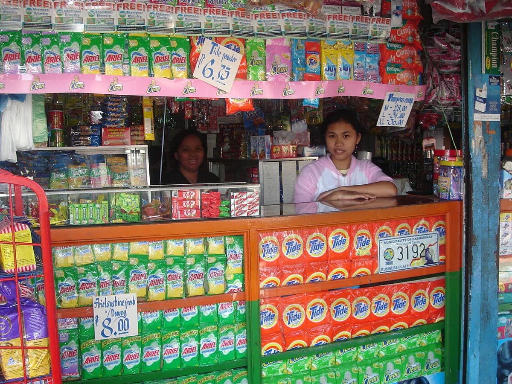
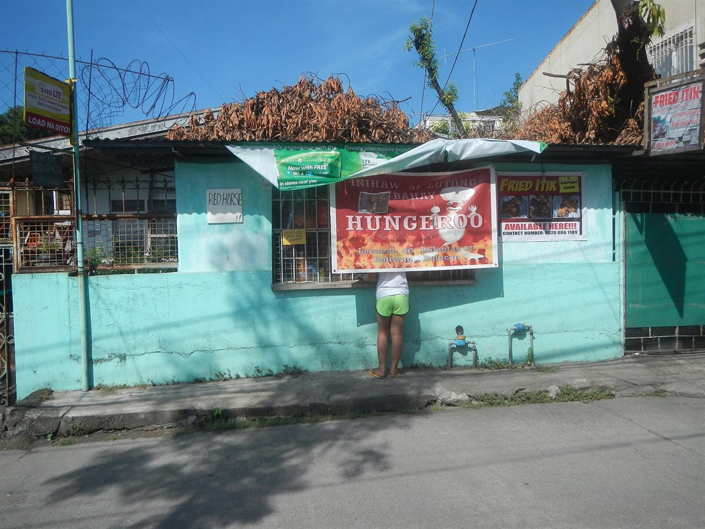
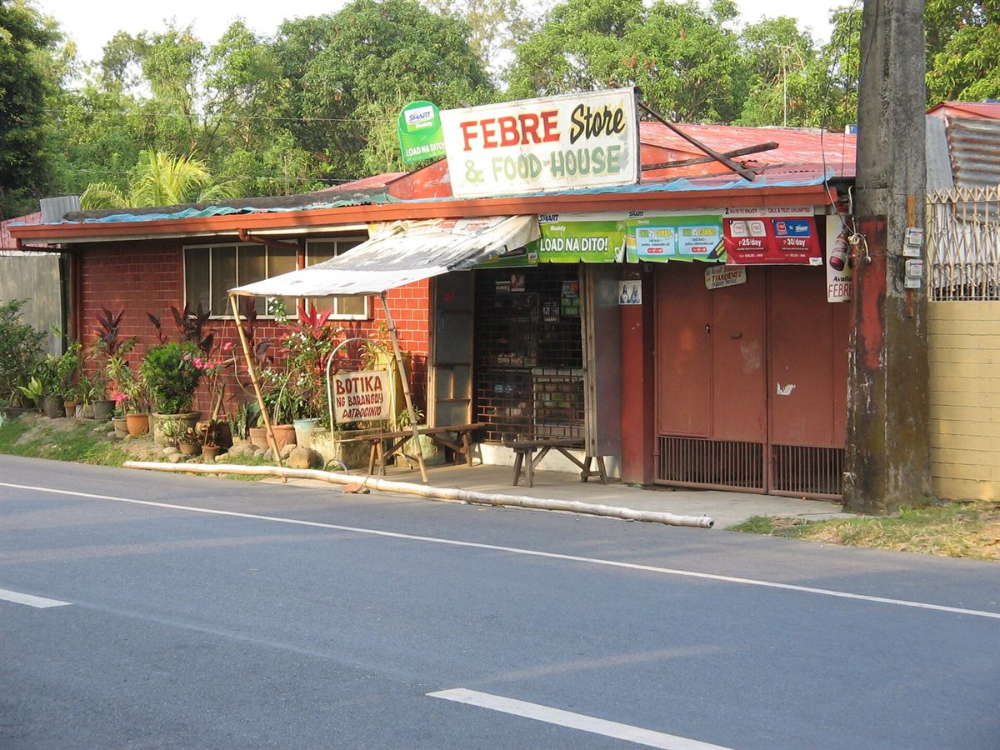

Lahat ng Paninda
Limang paninda, limang kwento. Every product on our shelves stands for one part of sari-sari store life. The one stamped Critique looks at its hard side.Limang paninda, limang kwento. Bawat paninda sa aming istante ay kumakatawan sa isang bahagi ng buhay sa sari-sari store. Ang may tatak na Kritika ay tumitingin sa mahirap na panig nito.
The five storiesAng limang kwento
-
Tingi
Buying in small portions to get through one day at a time.Pagbili nang paunti-unti para mairaos ang isang araw.
-
Utang
The listahan: credit built on trust between neighbors.Ang listahan: pautang na nakasandal sa tiwala ng magkakapitbahay.
-
Tambayan
The store as the neighborhood’s news hub and meeting place.Ang tindahan bilang sentro ng balita at tagpuan ng kapitbahayan.
-
Signs & labelsMga karatula
Hand-painted signs and loud packaging as vernacular design.Mga karatulang pininta sa kamay at maiingay na pakete bilang disenyong bernakular.
-
Sachet economyEkonomiya ng sachet
Affordable today, plastic waste for a long time after.Abot-kaya ngayon, basurang plastik nang matagal pagkatapos.
Ilista mo
Every store keeps a listahan. Add one line to ours: a memory of your own suki store, the tindera, or something you used to buy there.
May listahan ang bawat tindahan. Magdagdag ng isang linya sa amin: isang alaala ng suki mong tindahan, ng tindera, o ng lagi mong binibili roon.
- ExampleHalimbawa Piso-piso ang yelo kay Aling Baby tuwing tag-init. Ako lagi ang inuutusan.
- ExampleHalimbawa Kilala ng tindera ang pangalan ng buong pamilya namin, pati ng aso.
Mga tindahan sa Pilipinas
Sari-sari stores around the Philippines, from openly licensed photos. Tap a photo to see it larger.Mga sari-sari store sa iba’t ibang bahagi ng Pilipinas, mula sa mga litratong bukas ang lisensya. I-tap ang litrato para lumaki.
-

Ang harapan ng tindahan
Photo:Litrato: Judgefloro · CC0 1.0 · Wikimedia Commons -

Ang rehas
Photo:Litrato: PaulGorduiz106 · CC BY-SA 4.0 · Wikimedia Commons · cropped -

Ang mga paninda
Photo:Litrato: Exec8 at English Wikipedia · Public domain · Wikimedia Commons -

Ang tindera
Photo:Litrato: Glen · CC BY 2.0 · Wikimedia Commons · cropped -

Ang karatula
Photo:Litrato: Judgefloro · CC0 1.0 · Wikimedia Commons -

Ang tambayan
Photo:Litrato: Kuya Frank · CC BY-SA 3.0 · Wikimedia Commons

.jpg){kind=link}